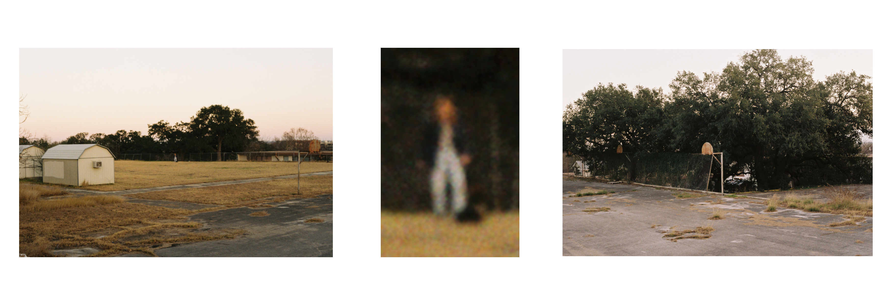
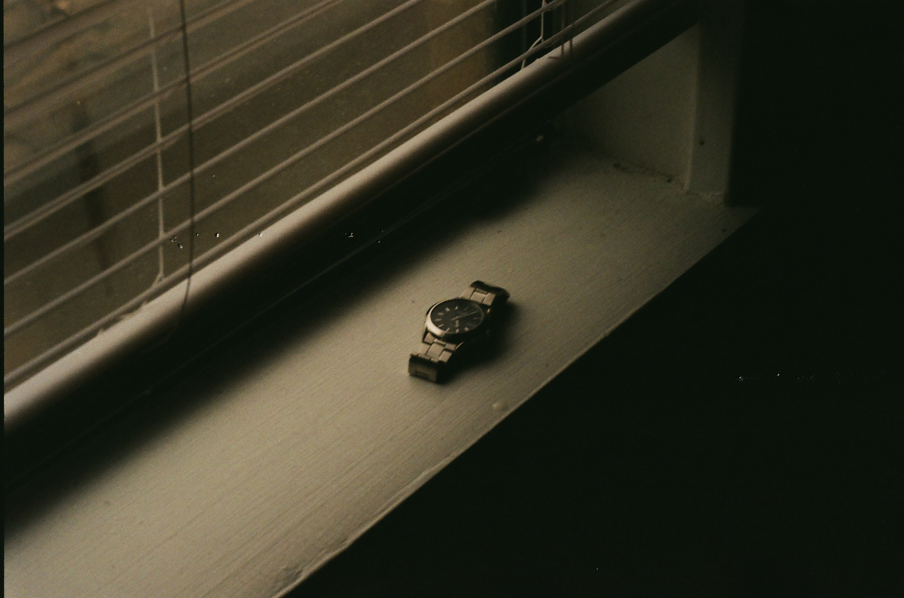

About Me
I started attending Texas State University back in Fall 2019. Now I am finally at the end of my academic journey and I will be graduating in December 2023. I grew up in the DFW area of Texas, and since attending Texas State I have moved my residence to San Marcos. The Hill country can be a bit boring, but I have always felt that San Marcos was an interesting little oasis between Austin and San Antonio.
Music has always played an important role in my life. I was in band from 6th grade all the way up until my second year of college. I started in the beginner French Horn class, and I marched in the Bobcat Marching Band. Before the pandemic, I got a part-time job as a Rotational DJ at Texas State's student Radio Station KTSW 89.9. During my time as a DJ, I produced two of my very own shows alongside two of my best friends. I currently hold an Executive position at KTSW as the Web-Master. The university uses a Content Management System (CMS), and it is my job to maintain the pages, and keep everything running smoothly. One of my more productive hobbies is Photography. My preferred medium is 35 mm film, but there is nothing wrong with digital. If that is something that interests you, you can check out some of my top pics below.
Photography
Film
- 

- 
Digital
My Journey
I never imagined myself as a software developer. As a kid I wanted to make movies and as a teenager I wanted to be an engineer so that I could make lots of money (no interest beyond that haha). Like most people, I had no clue what do with myself in college. After about a year, and a pandemic; I decided "well I like computers, let's do something with that." I looked at my options and didn't settle on Computer Science. Instead, I took some advice from my roommate at the time and settled on Computer Information Systems, a business degree. In retrospect, I wish I would've pursued a degree in computer science. I have had mixed feelings about being a business student, and after my full-stack intership, I proved to myself that I was more capable than I had originally thought. I feel that I still have a long way to go, and a lot more things to learn before I can call myself a "developer", but I am glad that I embarked on this journey. Hindsight is always 20-20 as they say, but I am content. Had I not picked this path at all, I would've never learned to code and I would've missed out on some great experiences. I don't think would've ever have meet the most important people that I now have in my life.
If you are reading this, I must thank you for taking the time to check this page out.